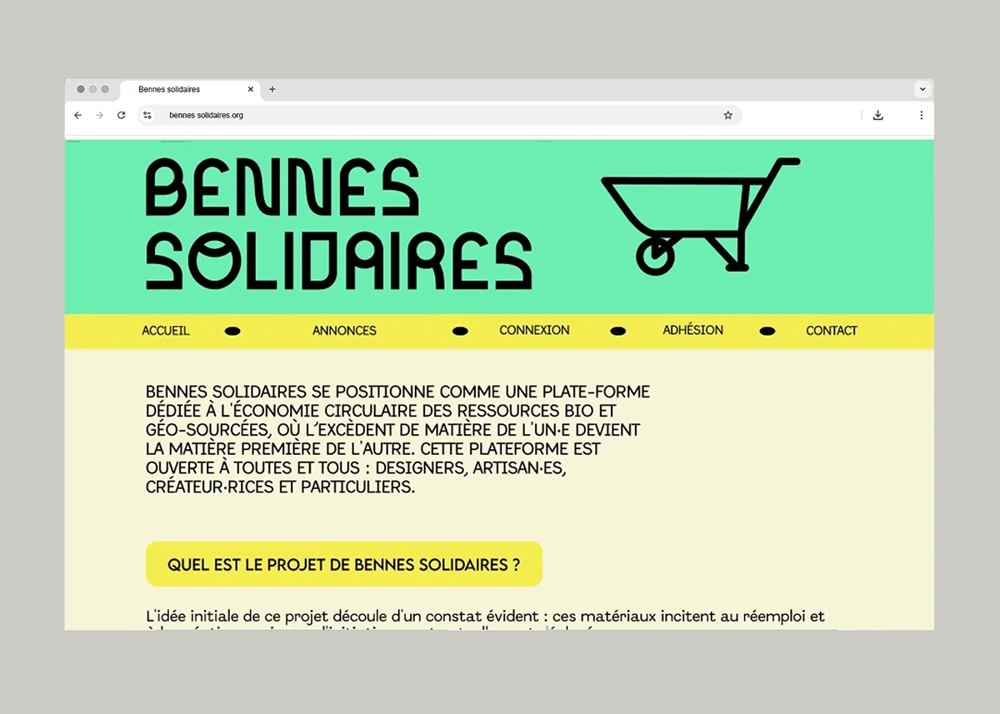
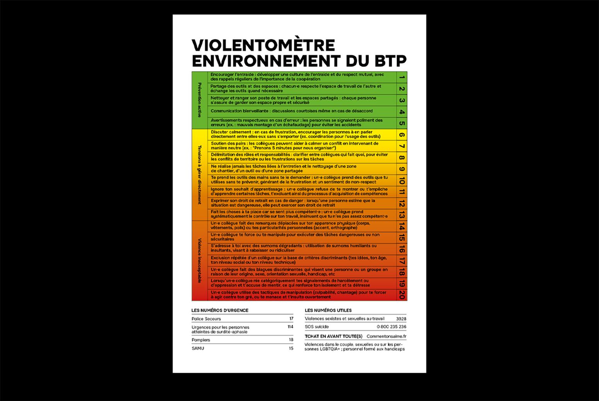
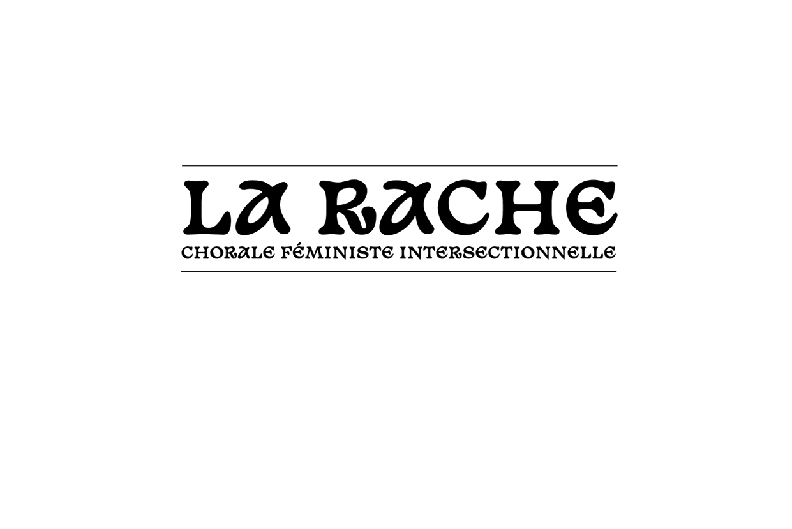
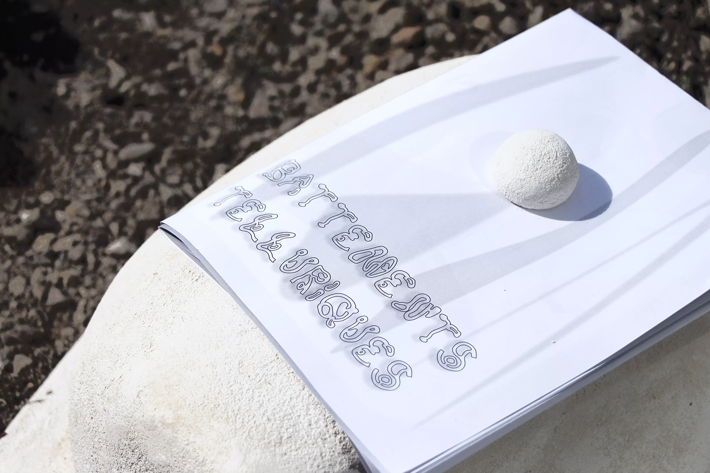
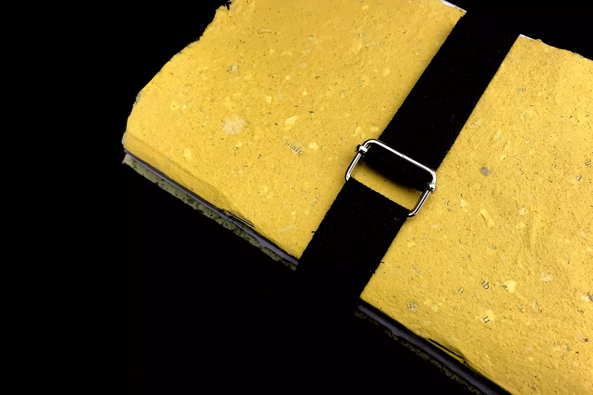
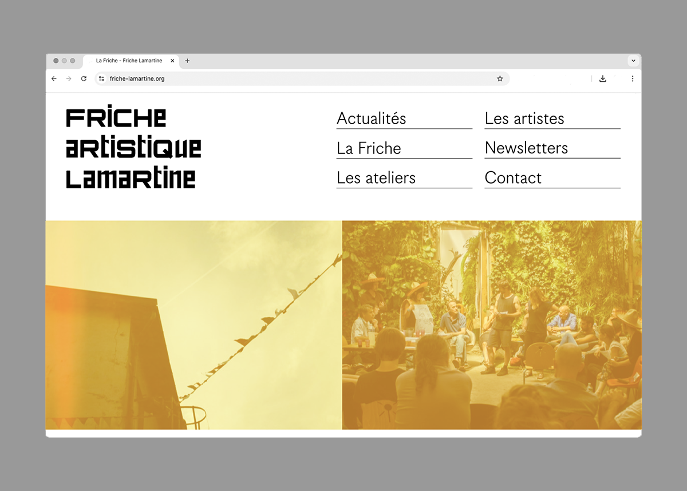
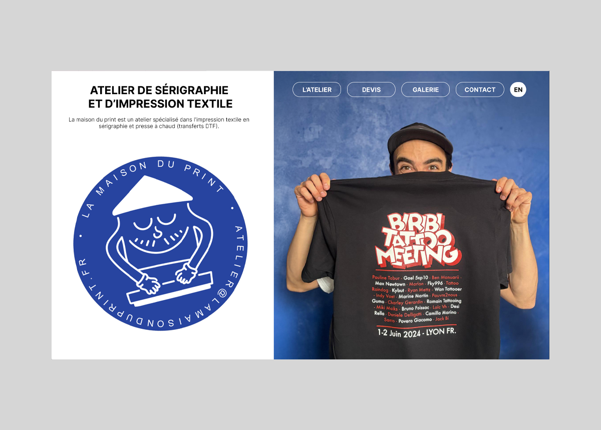

Bennes solidaires

identifier des problématiques
recherche appliquée
témoignages
prototypage
Violentomètre - BTP

observation participante
recherche appliquée
témoignages
animation
co-concertation
maquette
La Rache

identité visuelle
création d'affiche
Battements Telluriques

conception visuelle
écriture
édition
sculpture
scénographie
Au 46

création de sujet
anthropocène
remembrement
animation
atelier d'écriture
design fiction
atelier de fabrication
édition
Constructions Pluri[elles]
identité visuelle
podcast
construction
La Friche Lamartine

refonte
prototypage
développement
La Maison du print

conception
prototypage
développement